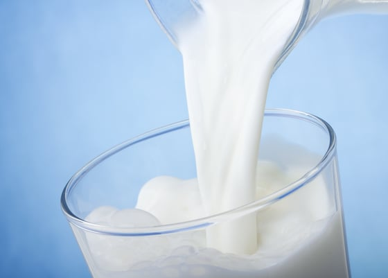

정제수 + 전지분유로 환원하면 환원유지만
정제구+ 탈지분유로 타면 그건 환원유가아니라
환원탈지유(무지방 우유) 라서 ,무지방우유는 원레 더싸야맞는것임
유지방빼버린값 이기에
제조사가 가공가정을 거쳤고 우리자회사 탈지분유썼에 원가절감이아니고 오히려더비싸고 우리는 남는게없어요! 라는 소리하는게 어불성설...
더비싸서 남는게없으면 그냥 안하면 되잖아?
일단 유지방 뽑은거로 생크림도만들고 버터도 만드니
유지방슈킹해간 제품을 원가절감 아니라는게 성립자체가안됨.
게다가 전지분유나 탈지분유 가공을거친 우유는 특유 분유비린내
신선함의 우유향미가 가버림 이러면 그냥 멸균우유와 별다를거없어짐. 아니...오히려 멸균처리 고온에 오래가열한 우유보다 더 열화판 멸균우유
결국 대놓고 말장난
국산 우유를 굳이 먹어야해? 밀레코비타 마셔 고소하니 맛있더라. 보충제 타먹을때 애용함